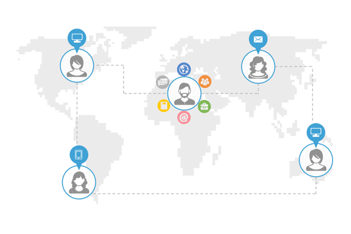

泛微销售岗位入职
培训知识地图
Weaver Running Rules
志达宇泛 见著于微

Weaver Running Rules
志达宇泛 见著于微
本培训历程地图适用于泛微业务类岗位（销售、售前支持、顾问）新入职员工，入职头两周学习使用；
请各区域培训负责人及员工上级督促新员工按照历程图要求完成学习任务，并在2周内通过产品的标准演示考核；
两周内主要培训内容包含：
1、入职基础培训：企业文化与制度、协同OA行业基础知识、泛微内部运营平台使用培训（1天）
2、e-cology产品前台应用培训（1天）
3、e-cology产品核心模块卖点及演示培训（4天，每天一个模块：培训1小时、练习6小时、考核验证1小时）
4、e-cology产品销售过程常见问题培训（1天）
5、e-cology产品总体演示培训与练习（2天）
6、培训最终检验考核方式：e-cology产品标准演示考核（1天）